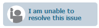
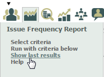
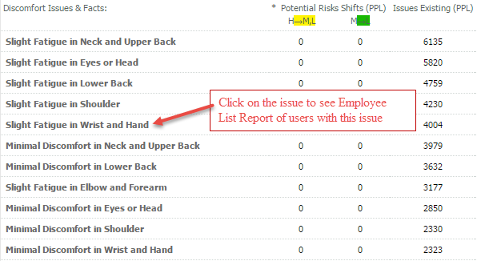
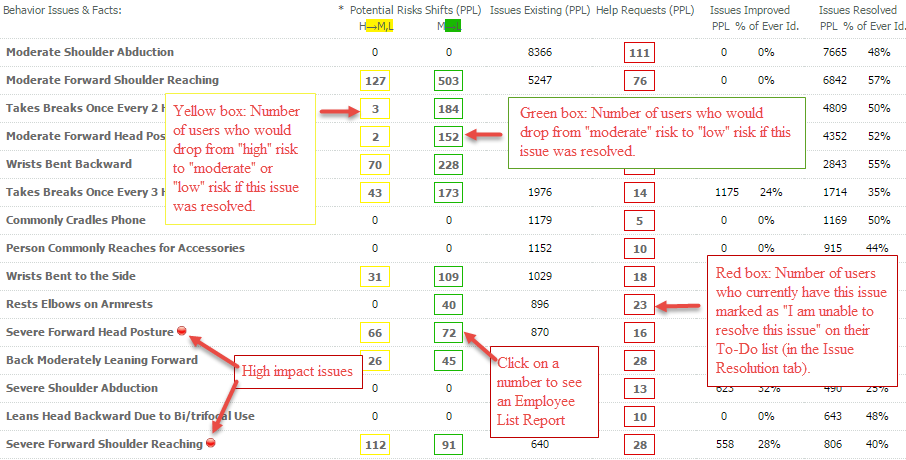

The Issue Frequency Report shows an aggregated list of Issues & Facts for users who meet the selected data criteria. Issue Frequency Reports may be printed or saved as a web page (cannot be downloaded into Excel).
Report Columns
Issues Existing (PPL) shows the number of users still experiencing the issue or fact.
Help Requests (PPL) shows the number of users who have selected "I am unable to resolve this issue" for that particular issue in their Issue Resolution tab.

Clicking on the issue or fact in the first column will provide a list of users who currently have that issue or fact listed in their Issues & Facts. The list is produced as an Employee List Report filtered for those users from which you can email the users or change attributes. Once you have been redirected to an Employee List Report, you may return to the Issue Frequency Report by clicking Show last results under Issue Frequency Report at the top of the page.

Discomfort Issues & Facts:

Click on the issue to see an Employee List Report of users with that issue.
The Potential Risk Shifts and Help Requests columns will always be zero for the Discomfort Issues & Facts, because these issues do not affect risk levels or show in the users' Issue Resolution tab To-Do Lists
Other Issues & Facts:

Yellow box: Number of users who would drop from "high" risk to "moderate" or "low" risk if this issue was resolved.
Green box: Number of users who would drop from "moderate" risk to "low" risk if this issue was resolved.
Red box: Number of users who currently have this issue marked as "I am unable to resolve this issue" on their To-Do list (in the Issue Resolution tab).
Click on the number to see an Employee List Report of the users it includes.
Print/Save Options
An Issue Frequency Report may be printed by selecting Print Results, saved as a web page or exported to Excel by clicking one of the output buttons.